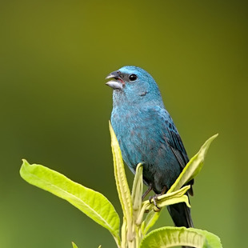

Anilha número KBM9835/SP
Proprietário: Guilherme Balog Gardino
RG: 33.630.540-8
CPF: 466.591.878-91
Município do dono: Pedro de Toledo - SP
Animal

Nome popular: Azulinho
Nome científico: Cyanoloxia glaucocaerulea
Descrição do animal: Menor que o azulão (C. brissonii), tem o bico mais curto e menos massivo, azul mais claro, mais brilhante nas sobrancelhas.
Gênero: Masculino
Incidência da ave em lista de extinção: PR
Tamanho médio (altura): 14 cm
Tamanho da anilha: 2,6 mm
Dados da documentação
Data de cadastramento: 10/11/2019
Número identificador: 123456789
Número da nota fiscal: 837837830932
Código de controle: gf64.j34w.90.ak